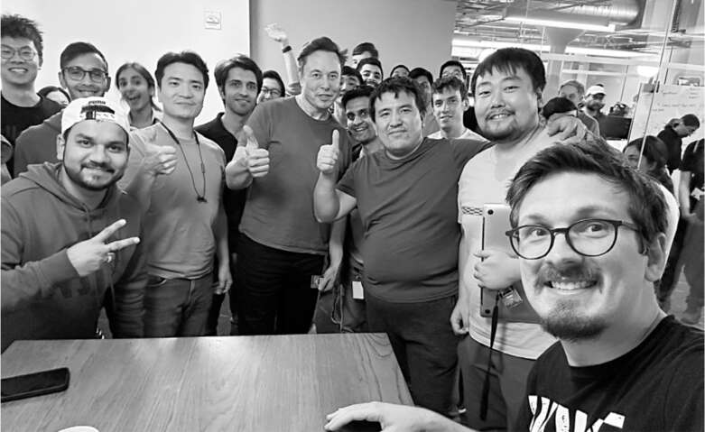
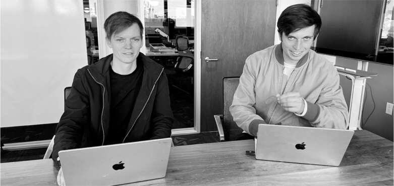

Chuyển đến
Việc triển khai Twitter Blue, thứ mà Musk nghĩ sẽ là liều thuốc cứu công ty, giờ đã bị tạm dừng, và sự sụt giảm doanh số quảng cáo không có dấu hiệu thuyên giảm. Các đợt sa thải mới sẽ tiếp tục cắt giảm nhân sự đang được lên kế hoạch. Những người ở lại sẽ phải làm việc hăng say như các kỹ sư tại Tesla và SpaceX. "Tôi rất tin rằng một số ít người xuất sắc, có động lực cao có thể làm tốt hơn một số lượng lớn người khá giỏi và có động lực vừa phải", ông nói với tôi vào cuối tuần thứ hai đầy khó khăn tại Twitter.
Nếu muốn những người còn lại ở Twitter trở nên cứng rắn, ông phải cho họ thấy mình có thể cứng rắn đến mức nào. Ông đã từng ngủ trên sàn văn phòng đầu tiên của mình tại Zip2 năm 1995. Ông đã ngủ trên mái nhà máy pin Tesla ở Nevada năm 2017. Ông cũng đã ngủ dưới gầm bàn làm việc tại nhà máy lắp ráp Fremont năm 2018. Không phải vì thực sự cần thiết. Ông làm vậy vì bản tính thích sự kịch tính, tính cấp bách, và cảm giác mình như một vị tướng thời chiến có thể tập hợp quân đội vào chế độ chiến đấu. Giờ là lúc ông ngủ tại trụ sở Twitter.
Khi trở về từ chuyến đi cuối tuần ở Austin vào đêm muộn Chủ nhật, ngày 13 tháng 11, ông đến thẳng văn phòng Twitter và chiếm dụng một chiếc ghế dài trong thư viện ở tầng bảy. Steve Davis, người phụ trách xử lý sự cố của ông, đã đến Twitter để giám sát việc cắt giảm chi phí. Cùng với vợ Nicole Hollander và đứa con hai tháng tuổi, Davis chuyển đến một phòng họp gần đó. Trụ sở tiện nghi của Twitter có vòi hoa sen, nhà bếp và phòng trò chơi. Họ nói đùa rằng mọi thứ thật sang trọng.
Vòng hai
Trên chuyến bay đến San Francisco vào tối Chủ nhật hôm đó, Musk gọi cho người em họ James và nói rằng anh và em trai Andrew cần phải đến làm nhiệm vụ và gặp ông tại Twitter khi ông đến. Hôm đó là sinh nhật của Andrew, và họ đang đi ăn tối với bạn bè. Nhưng cả hai đều đến. "Mọi người trong công ty đang đăng những thứ tiêu cực về Elon, và anh ấy nói rằng anh ấy cần một vài người mà anh ấy có thể tin tưởng ở đó", James nói.
Ross Nordeen, người lính ngự lâm thứ ba, đã có mặt ở đó. Anh đã ở trong văn phòng cả cuối tuần, xem xét mã của các kỹ sư Twitter để xem ai giỏi và ai kém. Sau hai tuần sống chủ yếu bằng bánh quy giòn, vóc dáng gầy gò của anh giờ trông càng hốc hác. Chủ nhật hôm đó, anh ngủ quên trong phòng trò chơi ở tầng năm của công ty. Khi thức dậy vào sáng thứ Hai và nghe tin Musk dự định cắt giảm sâu hơn nữa, anh thấy dạ dày mình cồn cào. "Tôi cảm thấy tồi tệ khi chúng tôi sắp sa thải thêm 80% công ty." Anh vào nhà vệ sinh và nôn mửa. "Tôi vừa thức dậy và nôn", anh nói. "Tôi chưa bao giờ làm thế trước đây."
Anh đi bộ về căn hộ của mình để tắm rửa và suy nghĩ. "Tôi ra ngoài và cảm thấy mình không muốn ở đây nữa", anh nói. Nhưng đến trưa, anh quyết định sẽ không bỏ rơi đội ngũ, vì vậy anh quay lại. "Tôi không muốn làm James thất vọng."
Những người lính ngự lâm, cùng với Dhaval Shroff và những người trung thành trẻ tuổi khác, đã lập một phòng chiến tranh, được gọi là "hộp nóng", trong một căn phòng ngột ngạt không có cửa sổ ở tầng mười, gần phòng họp lớn mà Musk đang sử dụng. Họ có thể cảm nhận được sự phẫn uất từ nhiều nhân viên Twitter, những người đã gọi họ là "đội côn đồ". Nhưng một số ít kỹ sư tận tụy của Twitter, chẳng hạn như Ben San Souci, muốn trở thành một phần của đội hình chiến đấu mới, và họ đã tham gia cùng đội lính ngự lâm trong không gian làm việc mở của tầng đó.
Musk gặp những người lính ngự lâm vào đầu giờ chiều hôm đó. "Chúng ta có một mớ hỗn độn ở đây", ông nói với họ. "Tôi sẽ ngạc nhiên nếu có ba trăm kỹ sư xuất sắc trong công ty này." Họ cần phải cắt giảm xuống còn chừng đó nhân lực cốt cán, nghĩa là sa thải gần 80% nữa.
Đã có một số phản đối. World Cup sắp diễn ra, cùng với Lễ Tạ ơn và những ngày mua sắm lớn. "Chúng ta không thể để tình trạng này xảy ra vào lúc đó", Yoni Ramon nói. James đồng ý. "Tôi có cảm giác điều này có thể tệ", anh nói. Musk nổi giận. Ông kiên quyết rằng vẫn cần phải cắt giảm sâu.
Các kỹ sư ở lại, theo ông, phải đáp ứng ba tiêu chí: giỏi, đáng tin cậy và nhiệt huyết. Đợt cắt giảm đầu tiên, diễn ra tuần trước, nhằm loại bỏ những người không giỏi. Họ đồng ý rằng ưu tiên tiếp theo là xác định và sa thải những người không đáng tin cậy, hoặc cụ thể hơn, những người dường như không hoàn toàn trung thành với Musk.
Nhóm bắt đầu xem xét các tin nhắn Slack và bài đăng trên mạng xã hội của nhân viên Twitter, tập trung vào những người có quyền truy cập cao vào hệ thống phần mềm. Dhaval nói: “Ông ấy yêu cầu chúng tôi tìm ra những người có thể bất mãn hoặc là mối đe dọa”. Họ tìm kiếm các từ khóa, bao gồm “Elon”, trên kênh Slack công khai. Musk ở cùng họ, nói đùa về những gì họ đang thấy.
Thỉnh thoảng cũng có những khoảnh khắc thú vị. Họ tình cờ thấy danh sách các từ bị tự động ngăn chặn không trở thành xu hướng trên Twitter. Khi đến từ "turdburger", Musk cười đến nỗi ngã ra sàn thở hổn hển. Nhưng một số tin nhắn họ tìm thấy, bao gồm cả những lời đe dọa trả thù, đã làm dấy lên nỗi hoang tưởng của ông. James kể: “Một người đã viết một lệnh có thể đánh sập toàn bộ trung tâm dữ liệu và nói, 'Tôi tự hỏi điều gì sẽ xảy ra nếu bạn chạy cái này'". “Anh ta đã đăng nó.” Họ ngay lập tức cắt quyền truy cập của anh ta và sa thải anh ta.
Các tin nhắn họ đọc chủ yếu là những tin nhắn trong phần công khai của Slack, nhưng điều đó vẫn khiến Ross, người đang hồi phục sau cơn buồn nôn buổi sáng, cảm thấy không thoải mái. Anh ấy nói sau đó: “Có vẻ như chúng tôi đã vi phạm quyền riêng tư và quyền tự do ngôn luận”. “Họ có văn hóa nói xấu sếp của mình.” Andrew, giống như James, rất nhạy cảm với các mối lo ngại về quyền riêng tư, cho biết họ không xem tin nhắn riêng tư. Anh ấy nói: “Đó là sự cân bằng trong một công ty. “Bạn cho phép sự bất đồng chính kiến đến mức nào?”
Musk không chia sẻ những lo ngại này. Tự do ngôn luận không giới hạn không mở rộng đến nơi làm việc. Ông yêu cầu họ loại bỏ những người đưa ra những bình luận rất khó nghe. Ông muốn loại bỏ sự tiêu cực khỏi lực lượng lao động. Nhóm làm việc qua nửa đêm và đưa ra danh sách ba chục người bất mãn. James hỏi: “Ông có muốn nói chuyện với người này và cho họ xem những gì họ đã nói không?”. Musk nói không. Họ nên bị sa thải. Và họ đã bị.
Có hoặc không?
Đặc điểm tiếp theo mà Musk muốn lọc — sau sự xuất sắc và đáng tin cậy — là nhiệt huyết. Trong suốt cuộc đời mình, ông luôn nghiêm khắc và hết mình. Đó là một huy hiệu danh dự đối với ông. Ông coi thường những người thành công thích đi nghỉ mát.
James và Ross đã dành cả ngày thứ Ba để nghĩ cách xác định những nhân viên nào thực sự nhiệt huyết. Sau đó, họ thấy một bài đăng mà ai đó đã đăng trên Slack. Nó viết: “Hãy để tôi đi với khoản trợ cấp thôi việc và tôi sẽ rời đi”. Họ chợt nhận ra rằng họ có thể dựa vào sự tự lựa chọn. Một số người có thể vui vẻ làm việc muộn vào ban đêm và cuối tuần. Nhưng những người khác, dễ hiểu là không thích viễn cảnh đó và không ngại nói ra điều đó.
James và Ross nhận ra rằng mọi người sẵn sàng, thực sự tự hào tuyên bố họ thuộc phe nào. Vì vậy, họ đề xuất với Musk rằng ông nên cho nhân viên cơ hội từ chối Twitter nghiêm khắc mới. Ông thích ý tưởng đó, và Ross đã thiết kế một biểu mẫu đơn giản với một nút mà nhân viên có thể nhấp để nói rằng họ muốn rời đi trong hòa bình và nhận được ba tháng trợ cấp thôi việc. James nói: “Chúng tôi rất hào hứng. “Chúng tôi sẽ không phải thực hiện tất cả những việc sa thải bổ sung này.”
Vài tiếng sau, Musk bước ra từ cuộc họp và tiến vào văn phòng với nụ cười trên môi. "Tôi có một ý tưởng tuyệt vời," ông nói. "Chúng ta sẽ đảo ngược lại. Đừng để lựa chọn là tự động rời đi. Thay vào đó, hãy để họ tự nguyện đăng ký ở lại. Chúng ta muốn làm cho nó giống như cuộc thám hiểm Shackleton. Chúng ta muốn những người tuyên bố rằng họ là người cứng cỏi."
Đêm đó, Musk bay đến Delaware để làm chứng trong một vụ kiện của cổ đông về gói lương thưởng của ông tại Tesla. Ngay trước 4 giờ sáng giờ miền Đông, ông đã thử liên kết đăng ký ở lại từ máy bay, trở thành người đầu tiên đồng ý với những kỳ vọng mới của Twitter. Sau đó, ông gửi một email cho tất cả nhân viên:
Từ: Elon Musk
Chủ đề: Ngã rẽ
Ngày: 16 tháng 11, 2022
Để xây dựng một Twitter 2.0 đột phá và thành công trong một thế giới cạnh tranh ngày càng khốc liệt, chúng ta sẽ cần phải cực kỳ nỗ lực. Điều này đồng nghĩa với việc làm việc nhiều giờ với cường độ cao…. Nếu bạn chắc chắn muốn trở thành một phần của Twitter mới, vui lòng nhấp vào liên kết bên dưới. Bất kỳ ai chưa thực hiện việc này trước 5 giờ chiều ET ngày mai (thứ Năm) sẽ nhận được ba tháng lương thôi việc.
James và Ross thức cả đêm để theo dõi kết quả. Họ đặt cược. Bao nhiêu người sẽ đồng ý? James nghĩ rằng sẽ có 2.000 người trong số khoảng 3.600 nhân viên còn lại. Ross đặt cược sẽ là 2.150. Musk đưa ra dự đoán thấp hơn: 1.800 người sẽ chọn ở lại. Cuối cùng, 2.492 người đã đồng ý, một con số cao đáng ngạc nhiên là 69% lực lượng lao động. Trợ lý của Musk, Jehn Balajadia, đã phát Red Bull pha vodka để ăn mừng.
Đánh giá mã
Tối thứ Năm đó, một thông báo đáng báo động đã được gửi đến nhân viên Twitter. Ngày hôm sau - thứ Sáu, ngày 18 tháng 11 - các văn phòng của Twitter sẽ đóng cửa và quyền truy cập thẻ sẽ bị tạm ngưng cho đến thứ Hai. Lệnh này được đưa ra vì lo ngại về an ninh rằng những người vừa bị sa thải hoặc đã chọn rời đi có thể cố gắng phá hoại. Nhưng Musk đã bỏ qua email. Sau khi làm việc đến 1 giờ sáng thứ Sáu, ông đã gửi một thông báo mâu thuẫn: "Bất kỳ ai thực sự viết phần mềm, vui lòng báo cáo lên tầng 10 lúc 2 giờ chiều hôm nay." Một lát sau, ông nói thêm: "Hãy chuẩn bị để thực hiện đánh giá mã ngắn gọn khi tôi đi quanh văn phòng."
Điều này khá khó hiểu. Một kỹ sư ở Boston là người duy nhất còn lại trong nhóm phụ trách lưu trữ dữ liệu quan trọng. Anh lo sợ rằng nếu lên máy bay, hệ thống có thể gặp sự cố khi anh đang bay ngang qua đất nước và anh sẽ không thể khắc phục được. Anh cũng sợ rằng nếu không đến, anh sẽ bị sa thải. Anh đã bay đến San Francisco.
Đến 2 giờ chiều, gần ba trăm kỹ sư đã đến văn phòng, một số mang theo vali của họ, mặc dù không biết liệu chuyến đi của họ có được hoàn trả hay không. Nhưng Musk đã ở trong các cuộc họp cả buổi chiều, phớt lờ họ. Không có đồ ăn, và đến 6 giờ tối, các kỹ sư không chỉ khó chịu mà còn đói, vì vậy Andrew và giám đốc kỹ thuật an ninh Christopher Stanley đã ra ngoài và mua pizza. "Tâm trạng lúc đó đã trở nên căng thẳng, và tôi nghĩ Elon đang cố tình để họ chờ đợi," Andrew nói. "Pizza đã xoa dịu mọi thứ."
Đến 8 giờ tối, Musk cuối cùng cũng xuất hiện và bắt đầu cái mà ông gọi là "kiểm tra trực tiếp", đứng cạnh bàn làm việc của các kỹ sư trẻ và xem qua đoạn mã của họ. Các kỹ sư sau đó cho biết, những đề xuất của ông đôi khi hữu ích, nhưng cũng có lúc khá hời hợt. Chúng thường liên quan đến việc đơn giản hóa quy trình. Ông cũng đứng cùng họ bên bảng trắng, nơi họ vẽ kiến trúc hệ thống của Twitter. Musk liên tục đặt câu hỏi cho nhóm kỹ sư. Tại sao chức năng tìm kiếm lại kém như vậy? Tại sao quảng cáo lại không liên quan đến sở thích của người dùng? Mãi đến sau 1 giờ sáng, ông mới rời đi cùng với X.

Christopher Stanley, ngoài cùng bên phải, chụp ảnh selfie với Musk và các kỹ sư sau một cuộc thi hackathon

Ross Nordeen và James Musk